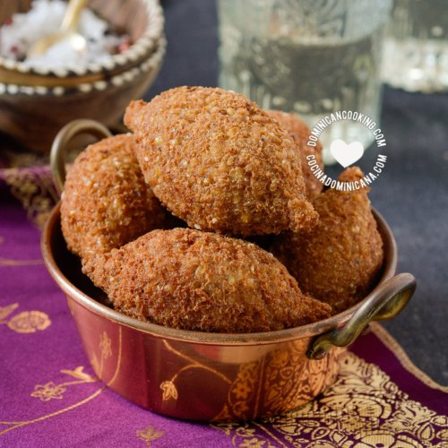

Kipe

Ingredient
- 400g Gehakt vlees
- Turkse peper Naar smaak
- Ui 1 Eenheid
- Olijfolie
- Zout en peper naar smaak
- Candeal tarwe nº 3 1 kop
- Kaneel 1 theel
- Meel 3 eetl
- Suiker 1 theel
- Paneermeel 3 eetl
- Eieren 3 Eenheden
Bereiding
- Was de candeal-tarwe meerdere keren, laat uitlekken tot hij droog is en
breng tenslotte op smaak met zout, meng en laat ongeveer 20 minuten rusten.
- Pel en snijd de ui in brunoise.
- Fruit in een hete pan met olijfolie de ui lichtbruin, voeg dan het gehakt toe,
meng en breng op smaak met goedkoop, kaneel, zout, peper en suiker,
meng en kook ongeveer 15 minuten. Verwijderen en afkoelen.
- Doe de candeal tarwe in een kom samen met de bloem en het paneermeel, meng goed
en voeg de eieren toe, meng opnieuw tot een uniform deeg, voeg indien
nodig meer bloem en paneermeel toe en kneed dan..